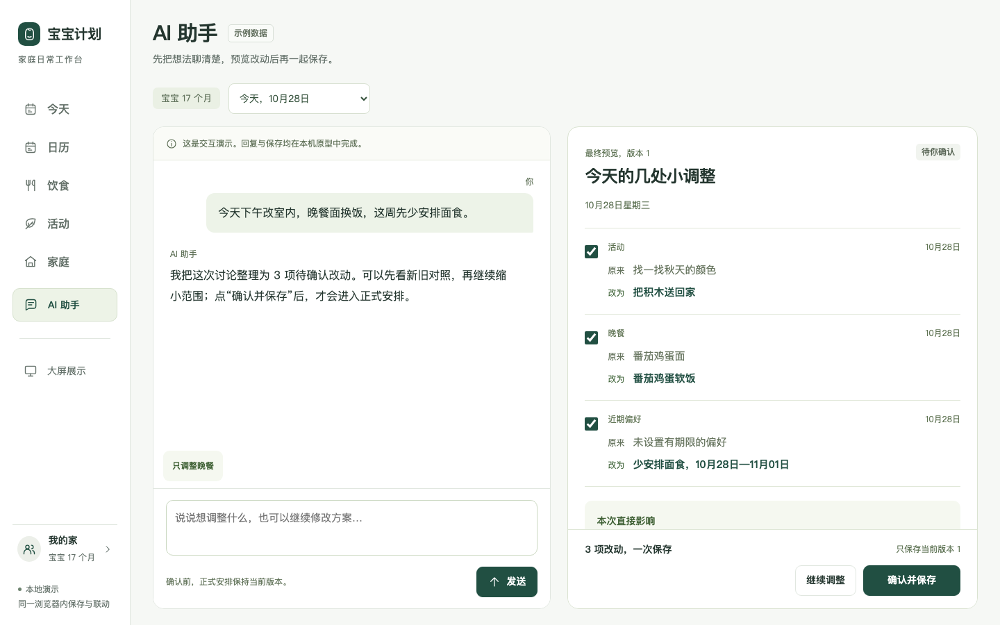
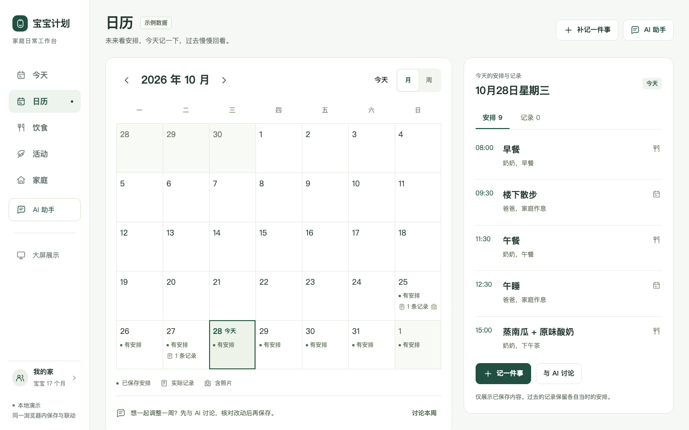
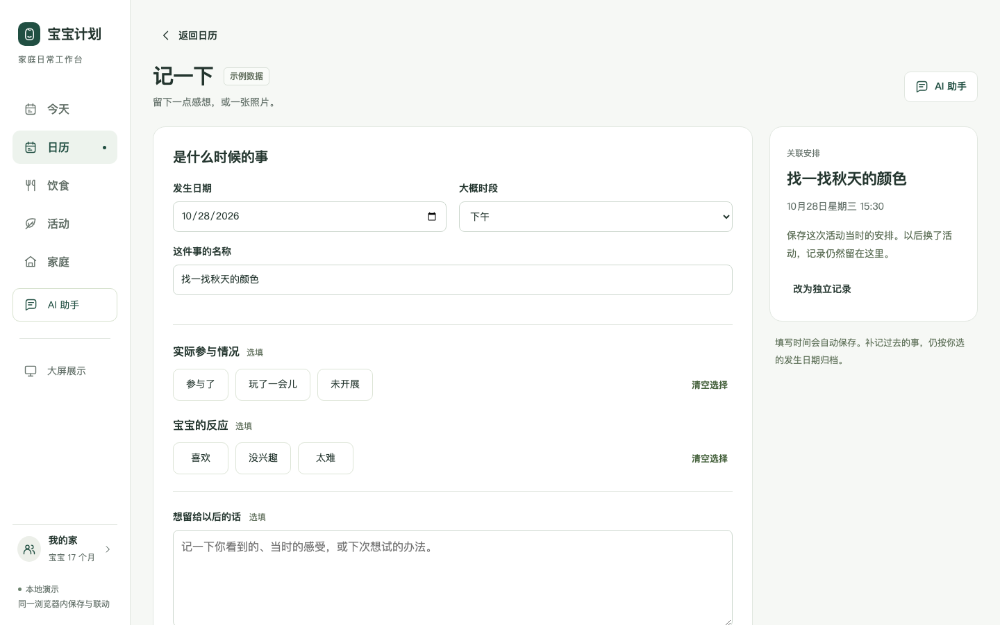
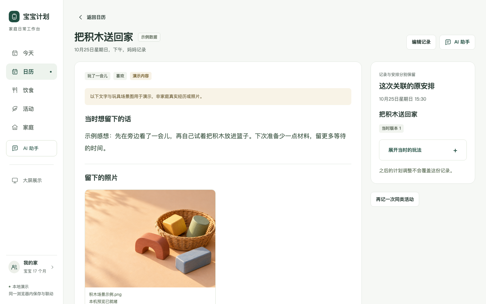

宝宝计划 · A版新增页面
先讨论、预览后确认；计划与回顾放进同一个日历。

AI 助手与方案确认
日期范围、新旧对照、偏好期限与版本清楚可见；继续讨论后只保存最终方案。

统一日历
未来看已保存安排，今天调整与记录，过去先回看实际记录，再展开当时计划。

记一下与事后补记
参与、反应、感想和照片可选填；临时事件可独立记录，发生时间与填写时间分别保存。

记录详情与历史回顾
每次活动独立留存原话、照片和当时安排；后续修改计划，仍可找到这一次。